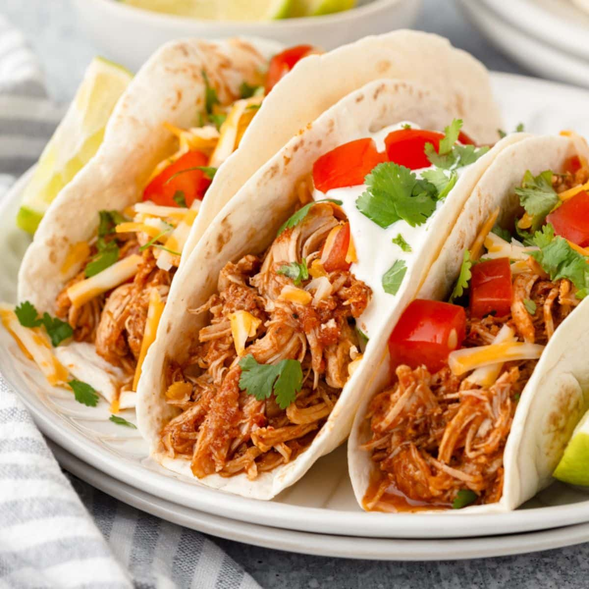

About TSO TSO was founded in 2022. Our shop was built from a love of tacos🌮🌮🌮.We hope our shop adds a unique and interesting place to our little town. At TSO, we strive to provide the best quality tacos and burritos in the area. We use only the freshest ingredients and prepare everything in-house. We are dedicated to providing a friendly and welcoming environment for our customers. We hope you enjoy your visit! TSO is a family-owned restaurant that has been serving the community for over 20 years. We are known for our delicious tacos and burritos, as well as our friendly and welcoming atmosphere. Our menu features a variety of options, including vegetarian and vegan choices. We are committed to using only the freshest ingredients and preparing everything in-house. We hope you enjoy your visit!
Our Menu At TSO, we offer a variety of delicious tacos and burritos. Our menu features a selection of traditional and modern options, including vegetarian and vegan choices. We use only the freshest ingredients and prepare everything in-house. We are committed to providing the best quality food and service to our customers. We hope you enjoy your visit! Tacos Beef Tacos Seasoned ground beef, lettuce, cheese, and salsa in a soft corn tortilla. Chicken Tacos  Grilled chicken, lettuce, cheese, and salsa in a soft flour tortilla. Vegetarian Tacos Seasoned black beans, lettuce, cheese, and salsa in a soft corn tortilla. Burritos Beef Burrito Seasoned ground beef, rice, beans, cheese, and salsa in a flour tortilla. Price Tacos Type Quantity Price Beef Tacos Crunchy 4 pieces 200৳ 6 pieces 300৳ 10 pieces 500৳ Soft Tacos 4 pieces 180৳ 6 pieces 280৳ 10 pieces 480৳ Chiicken Tacos Crunchy 4 pieces 120৳ 6 pieces 180৳ 10 pieces 300৳ Soft Tacos 4 pieces 100৳ 6 pieces 160৳ 10 pieces 280৳ Vegetarian Tacos Crunchy 4 pieces 100৳ 6 pieces 150৳ 10 pieces 250৳ Soft Tacos 4 pieces 80৳ 6 pieces 130৳ 10 pieces 230৳ Scroll Up